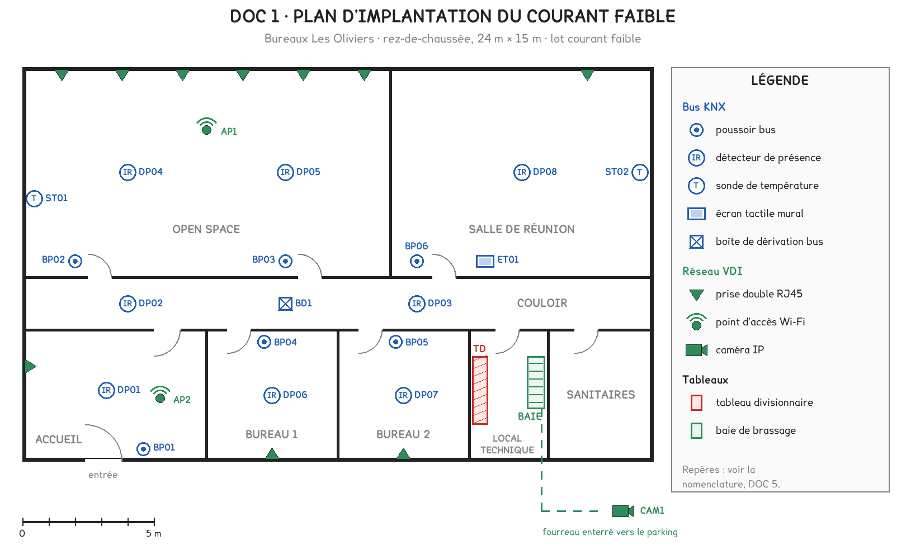
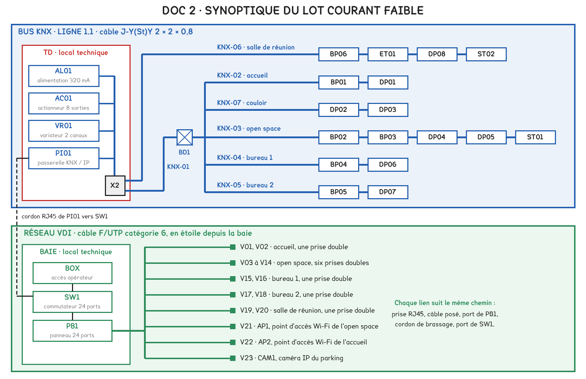
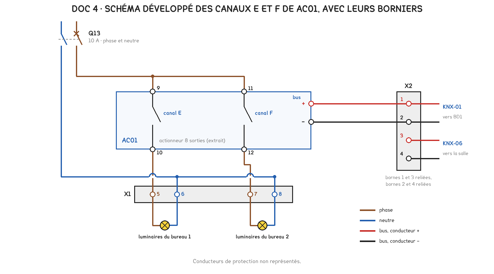
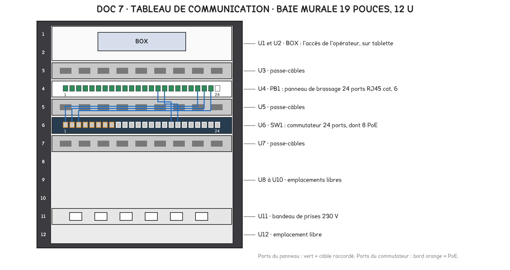
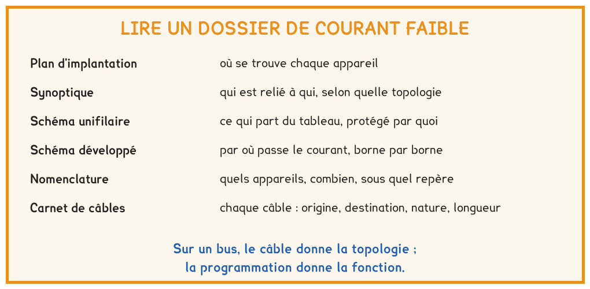

BTS FED option C · 1re année
Huit pièces, et chacune répond à un type de question. Choisir la bonne pièce, suivre une liaison du tableau jusqu'au local, repérer l'écart entre deux documents. L'épreuve écrite demande quatre fois sur dix d'extraire une information d'un dossier.
6 questions · 4 exercices · 3 replis · 6 figures
Savoirs travaillés
Le premier jour d’une intervention, le technicien ne dispose ni de l’installateur ni du programmeur. Il dispose du dossier, et tout ce qu’il doit savoir s’y trouve, à condition d’ouvrir la bonne pièce.
La séance s’est appuyée sur le dossier fictif des Bureaux Les Oliviers, un bâtiment tertiaire de plain-pied : huit pièces, un bus KNX et un réseau VDI.

| La question | La pièce qui répond |
|---|---|
| Où se trouve l’appareil ? | le plan d’implantation |
| Qui est relié à qui, selon quelle topologie ? | le synoptique |
| Qu’est-ce qui part du tableau, protégé par quoi ? | le schéma unifilaire |
| Par où passe le courant, borne par borne ? | le schéma développé |
| Quels appareils, combien, sous quel repère ? | la nomenclature |
| D’où part ce câble, où arrive-t-il, quelle longueur ? | le carnet de câbles |
| Qu’exige le maître d’ouvrage ? | le CCTP |
Avant de chercher une information, il faut choisir la pièce qui la contient. Le plan ne montre aucun câble, le synoptique ne respecte aucune distance : ce ne sont pas des défauts, chaque pièce a son rôle.

Chaque appareil, chaque câble et chaque borne porte un repère, identique sur toutes les pièces et sur l’étiquette posée aux deux extrémités du câble. Un repère de borne nomme toujours son bornier : X1:5 désigne la borne 5 du bornier X1.

Sur un bus, aucun fil ne relie le poussoir au luminaire qu’il commande. Le câble renseigne sur la topologie ; seule la programmation renseigne sur la fonction. Chercher la fonction d’un poussoir dans le carnet de câbles ne mène à rien.
Pour aller plus loin
Dans le dossier de programmation : le fichier du projet de paramétrage et la liste des fonctions et des adresses de groupe. C’est l’intégrateur qui l’établit et le détient.
Il doit être remis au maître d’ouvrage avec le dossier des ouvrages exécutés. Un dossier de courant faible qui ne le contient pas est incomplet, et il convient de le réclamer avant toute intervention sur les fonctions.
Dans le dossier étudié, une sonde figure sur le plan, sur le synoptique et dans la nomenclature, mais dans aucune ligne du carnet de câbles. Un tel écart se signale au bureau d’études, se vérifie sur place, puis se fait corriger. Il ne se tranche pas au jugé.
Pour aller plus loin
Un comptage qui ne se recoupe avec rien n’est pas terminé. Les poussoirs comptés sur le plan doivent se retrouver dans la nomenclature ; les prises doivent correspondre aux liens du carnet de câbles et aux ports occupés du panneau.
C’est aussi ainsi que se dimensionne une ligne : le nombre de participants vient de la nomenclature, les longueurs viennent du carnet de câbles.

Le panneau de brassage reçoit les câbles posés dans le bâtiment : c’est la partie fixe. Le commutateur est l’équipement actif. Les cordons de brassage relient l’un à l’autre, et c’est la seule partie qui se modifie sans intervenir dans le bâtiment.
90 m · 100 m
Le nombre de ports se dimensionne avec la réserve fixée par le CCTP.
Pour aller plus loin
Dans un logement, le tableau de communication est un coffret placé dans la gaine technique, à côté du tableau électrique. Dans un bâtiment tertiaire, il prend la forme d’une baie de brassage de 19 pouces.
Dans les deux cas, il réunit l’arrivée de l’opérateur et l’extrémité de tous les liens du réseau, et c’est le premier endroit à consulter lors d’une panne réseau.

Exercice · D2-1
Extrait d’un carnet de câbles : KNX-21, tableau → boîte de dérivation, 14 m ; KNX-22, boîte → salle A, 27 m ; KNX-23, boîte → salle B, 9 m ; KNX-24, tableau → hall, 33 m.
Quelle longueur de câble bus la ligne compte-t-elle au total ?
Exercice · D2-1
Un carnet de câbles recense 31 liens VDI. Le CCTP exige sur le panneau de brassage une réserve d’au moins 20 % par rapport au nombre de liens installés.
Combien de ports le panneau doit-il offrir au minimum ?
Exercice · C1-1
Un départ d’éclairage ne fonctionne plus. Vous voulez savoir, avant d’ouvrir le tableau, par quel disjoncteur il est protégé.
Quelle pièce du dossier ouvrez-vous ?
Exercice · B8-1
Un collègue cherche dans le carnet de câbles quel luminaire commande le poussoir bus d’un bureau. Lui expliquer en trois ou quatre lignes pourquoi il ne le trouvera pas, et où chercher.
La séance suivante reprend la salle de réunion des Bureaux Les Oliviers pour en faire l’analyse fonctionnelle : ce que le système doit faire, puis comment il le fait. Elle suppose acquis le vocabulaire de la chaîne et la lecture de la nomenclature.
Cette page rappelle la séance. Elle ne remplace pas le polycopié et ne donne aucun corrigé. Rien de ce que vous saisissez n'est enregistré.